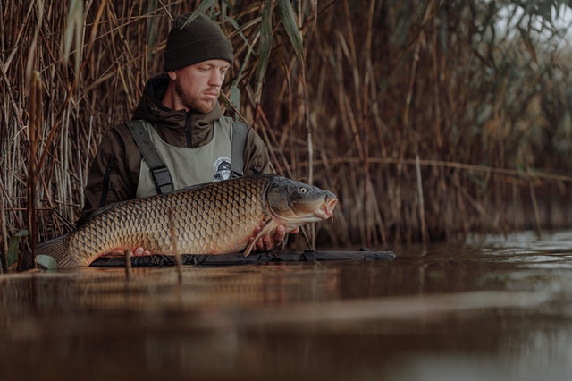

Fish Haven, Idaho

Weather Summary
Currently:
Temperature: ° F
Wind Chill:
Humidity: %
Wind Speed:
5 Day Forecast
Fish Haven Creek Fishing
by Hook and Bullet
Fish Haven Creek is a stream located just 20 miles from Montpelier, in Bear Lake County, in the state of Idaho, United States, near Fish Haven, ID. Whether you’re spinning, baitcasting or fly fishing your chances of getting a bite here are good. So grab your favorite fly fishing rod and reel, and head out to Fish Haven Creek.
Join us as we discuss the Idaho Fishing License options, fishing rules and fishing regulations. Please remember to check with the local Fish and Wildlife department to ensure the stream is open to the public. Now get out there and fish! Check out our Fishing Times chart to determine when the fish will be most active. see more...
Contact Information
- Phone #: 777-777-7777
- Email: prestonidaho@preston.com